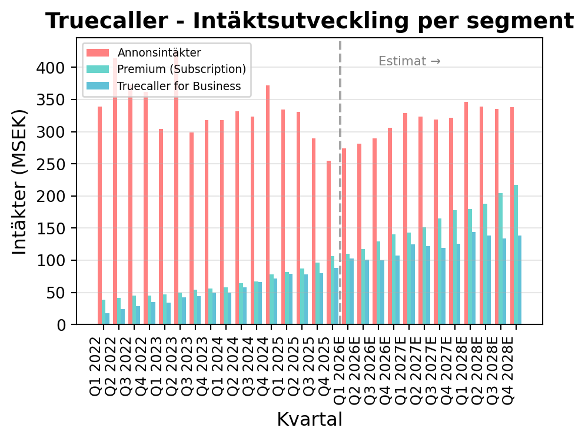
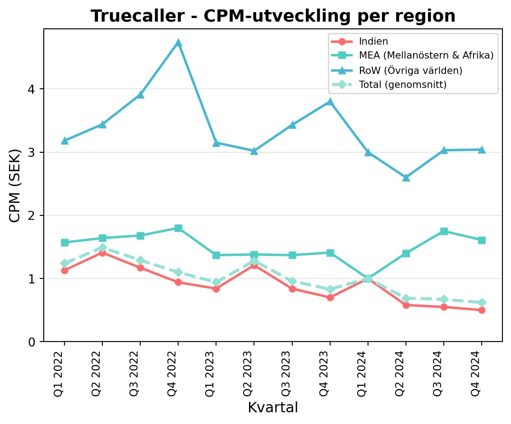
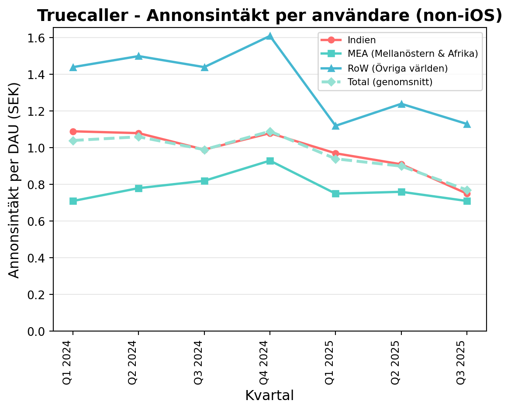
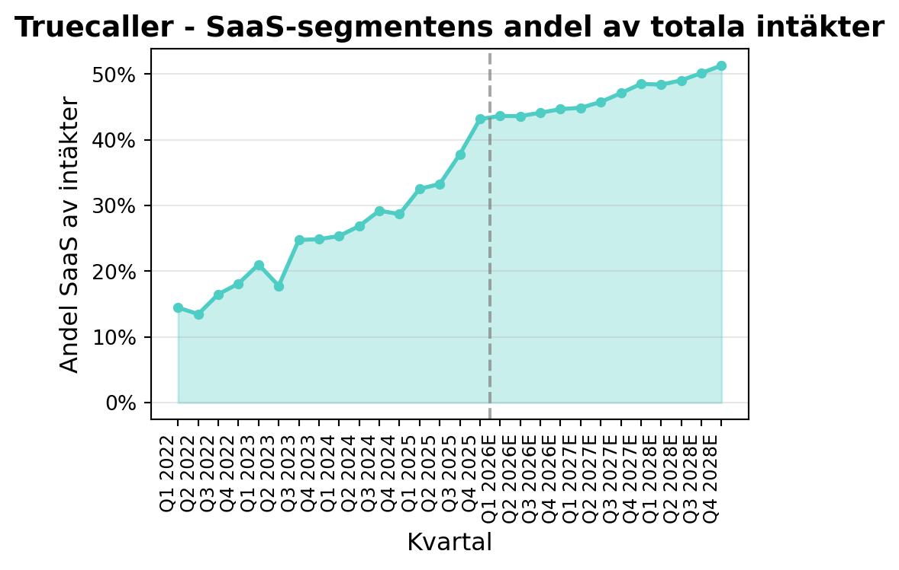
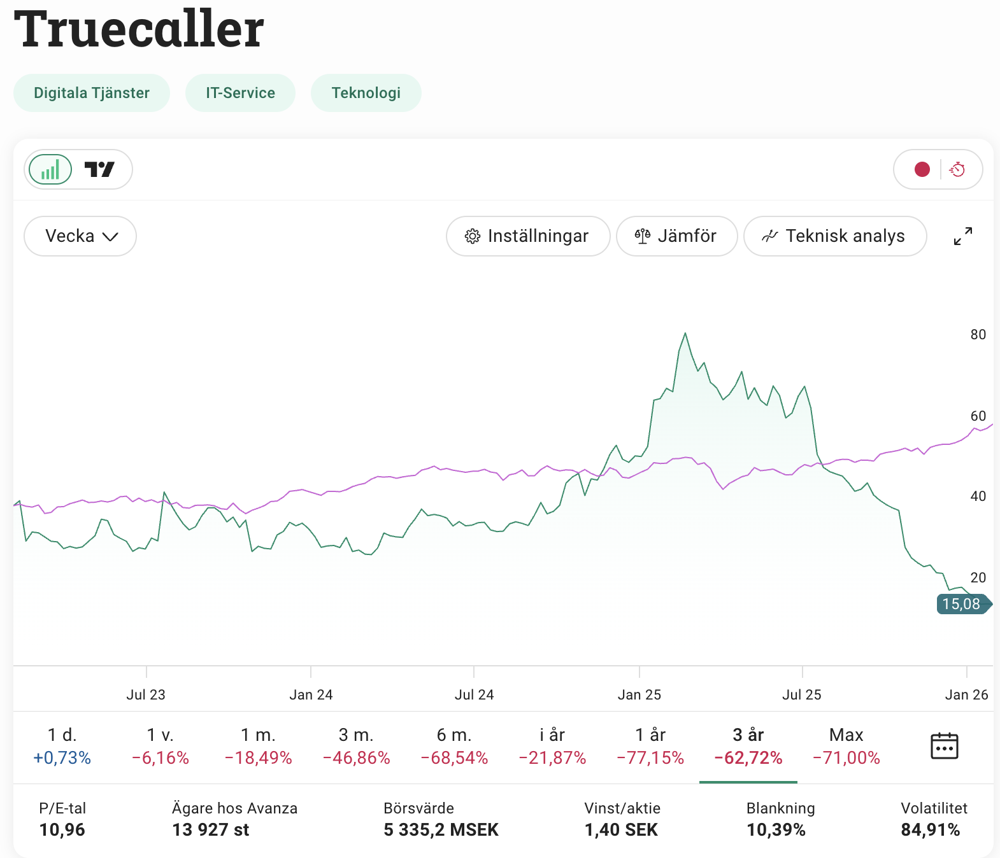
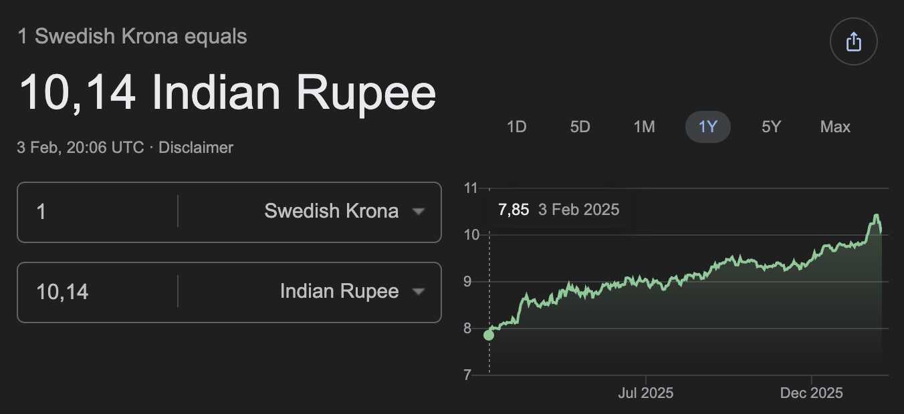
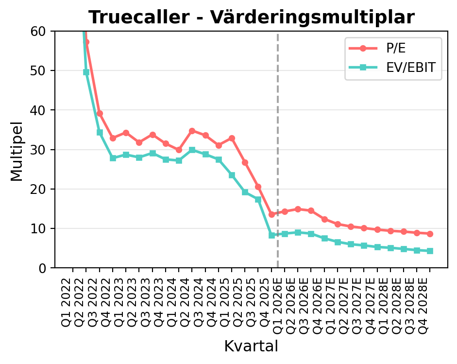
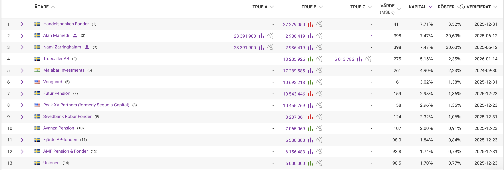

Aktiecase Truecaller
aktieanalys
bolagsanalys
aktiecase
7x EV/EBIT, 11% av kapitalet blankat, växer tvåsiffrigt under 2026E, enorm nettokassa, grundarna är största ägare och ledningen insynsköper – Blankarna ser datasektretess hinder
NoteDisclaimer
Tänk på att investeringar alltid innebär ett risktagande. Gör alltid din egen analys innan eventuell handel.
WarningEget ägande
Jag äger aktier i Truecaller.

Sammanfattning
Truecaller är den ledande globala plattformen för samtalsidentifiering och spam-blockering med knappt 500 miljoner månatliga användare. Bolaget grundades 2009 av svenskarna Alan Mamedi och Nami Zarringhalam och är noterat på Nasdaq Stockholm. Verksamheten består av tre segment: Ads, Truecaller Premium och Truecaller for Business.
Bolaget möter för närvarande betydande motvind genom valutapåverkan (SEK/INR), algoritmförändringar hos Google som påverkar annonsintäkter, förbjud av reklam för real money gambling spel (fantasy leagues). Trots detta visar SaaS-segmenten (Premium och Business) stark tillväxt med över 30% årlig ökning. Värderingen är attraktiv på EV/EBIT 7x för 2026E, vilket ger god potential på 2-3 års sikt när motvindens effekter avtar.
1. Bakgrund
Grundandet och historik
Truecaller grundades 2009 i Stockholm av Alan Mamedi och Nami Zarringhalam, idén föddes ur en personlig frustration över att inte veta vem som ringde. Tjänsten levereras som en Android- och iOS-app som snabbt blev populär och nådde topp 3 i Jordanien och Libanon redan 2011. År 2012 expanderade bolaget till Indien, som idag utgör den största marknaden med över 320 miljoner användare.
Bolaget har fått finansiering från framstående investerare som Sequoia Capital och Atomico (Skype-grundarens investmentbolag). 2020 lanserades B2B-produkten “Truecaller for Business” och 2021 börsnoterades bolaget på Nasdaq Stockholm under IPO-haussen, med en toppkurs på cirka 136 SEK. Från toppen 2021 till idag har Truecaller funamentalt utvecklas starkt med ca 1 miljon användare per vecka, från 350M användare Q1 2024 till 450 miljoner använder på 450 miljoner användare Q4 2025. Intäkt per användare minskar och därmed blir omsättningstillväxten lidande.
Från starten av 2025 har Rishit Jhunjhunwala varit VD. Han var tidigare Chief Product Officer. Bolaget hanterar cirka 9 miljarder samtal per dag i sitt system, vilket skapar enorma nätverkseffekter då fler användare innebär bättre spam-identifiering.
Vision och affärsmodell
Truecallers vision är att skapa ett säkrare ekosystem för kommunikation genom att identifiera vem som ringer och blockera oönskade samtal och meddelanden. Appen fungerar bättre för Android än iOS, appen ser generellt annorlunda ut i olika marknader och på olika operativsystem. I grunden kommer efterfrågan för appen kommer att bestå så länge det finns bedrägerier via telefonsamtal och sms samt att Truecaller har den högsta täckningen på telefonnummer.
EU släppte GDPR 2017, Nigeria släppte sin motsvarighet 2020 och Indien släpper sin motsvarighet, i slutet av 2025, som träder i kraft i maj 2027. Truecallers affärsmodellen är beroende av att ha möjlighet att processera telfonnummer och namn, de flesta dataskyddslagstiftningarna har undantag i regelverket där det är okej att processera information om man har en legitim grund för att motverka spam och bedrägerier.
2. Verksamheten
Truecaller har tre distinkta verksamhetsområden som tillsammans driver intäkterna:
2.1 Annonsering i appen
Annonsering utgör fortfarande den största intäktskällan men har minskat som andel av totala intäkter. Segmentet monetariserar gratisanvändarna genom programmatisk reklam där Google och Meta är viktiga partners. Cirka 90% av annonsintäkterna är programmatiska medan 10% kommer från direktförsäljning (för närvarande endast i Indien).
Historiskt har intäkterna per användare (CPM) varit över 1 sek per anvädare, men har dragit ihop sig över tid samtidigt som antalet användare ökar. Truecaller är bra på att attrahera användare, men dåliga på att monitesera sina användare.
Intäkten per användare globalt för ads är 71 öre per år, finns det möjlighet för denna att normalisera sig till en lite bättre marknad som vi såg under 2022 så kan den öka till 120 öre per användare och år, vilket skulle ge en kraftig intäktsökning.

Indien har varit en utmanande marknad under en längre tid. Sedan i början av 2025 har Truecaller slutat att redovisa CPM och har börjat med Ads per user exkl iOS.

Historiken är kort, men det precis som med CPM bör det blir bättre för Truecaller när annonsmarknaden blir lite bättre. Alternativt om Truecaller själva kan få en högre andel egna direkt intäkter utan att gå genom plattformarna Google och Meta.
Utmaningar 2025:
- Google ändrade sin algoritm och klassificerade Truecallers trafik som “confirmed click”, vilket kräver extra bekräftelse från användaren. Denna effekt slog in i mitten på augusti 2025 och har lett till en nedgång i annonsintäkter, effekten beräknas vara en förlust av ca 30% av annonsintäkterna. Över tid har beroendet mot Google varit enormt, men gradvis minskat.
- Real Money Gaming (RMG) förbjöds i Indien i juli 2025, vilket påverkar cirka 5% av annonsintäkterna
- Stark valutamotvind (SEK/INR)
Från Q4 rapporten 2025 framgår det att det fortsatt är ett utmanande läget för Truecaller, men är det betydligt bättre än den vinstvarningen som kom i mitten på december 2025.
2.3 Truecaller for Business
B2B-segmentet erbjuder verifierade företagsnummer och API-integration för större organisationer.
Nyckeltal:
- 2 500-3 000 företagskunder
- 50% uppförsäljning YoY
- Churn: 1,7%
- Intäkterna har vuxit från 18 MSEK (Q1 2022) till 88 MSEK (Q4 2025)
Tanla Platforms Ltd är en viktig partner i Indien som exklusiv CPaaS-leverantör. Under 2025 har Truecaller for business lanserats i Sverige.
Möjligheter på sikt: SaaS-intäkterna blir en större andel av intäkterna.

Truecaller har sedan lanseringen av Truecaller for Business och Truecaller Premium lyckats växa med 30-40% årligen, därav blir högre andel av intäkterna mer stabila och förutsägbara.
Målsättning och måluppfyllnad
Truecaller har historiskt kommunicerat en målsättning om:
- Minst 45% årlig omsättningstillväxt mellan 2021-2024
- EBITDA-marginal överstigande 35% efter 2024
Utfall: Genomsnittlig tillväxt mellan 2021-2024 var 40%. EBITDA-marginalen var i snitt 40% under åren 2021-2024. Tillväxten faller kort pga annonsaffären har inte gått lika bra som förväntat, antalet användare ökar dock med en lägre genomsnittlig lönsamhet per användare.
3. Marknaden
Marknadsstorlek och tillväxt
Marknaden har många spelare, Truecaller är störst. Olika typer av aktörer adresserar olika delar av marknaden. Markande för bedrägerier via telefonsamtal och sms är enorm och kommer att fortsatta. Truecaller med sin storlek och datafördel är väl positionerat att kapitalisera på detta i min bedömning.
AI kan potentiellt vara något som gör att det är lättare att skapa en liknande tjänst som Truecaller, men det som jag tycker talar emot det är nätverkseffekterna som Truecaller byggt upp med sin historik inom segmentet och deras enorma databas. Varumärktet Truecaller är även starkt inom samtalsidentifiering. Jag kan säkert vibekoda ihop en app i Swift som fungerar för att identifera samtal, men jag kommer inte ha någon trovärdighet att leverera tjänsten lika bra som Truecaller för en så låg kostnad.
CNAP – indiska staten har annonserat att i slutet av mars 2026 kommer CNAP, tjänst för samtalsidentifiering, att lanseras i Indien. Detta har skapat oro för Truecallers position på den viktiga indiska marknaden. Det kommer bygga på KYC-data från teleoperatörerna, men det är effektivt det kommer vara mot bedrägerier. Jag är skeptiskt till att CNAP kommer hjälpa indiska medborgare att undvika bedrägerier.
Risker
- Regulatorisk risk, att integritetsregler skärps och blir så pass hårda att Truecaller inte har rätt attt processera telefonnummer till personer som inte explicit accepterat tjänsten. Läs: https://www.trai.gov.in/sites/default/files/2024-11/Truecaller_10102024.pdf – Jag gissar att det är osannolikt att det slår in och blir förbudet för Truecaller att processera telefonnummer, det är inte gambling som de sysslar med och troligen är det dålig stämning för alla Truecaller användare som helt plötsligt skulle stå utan skydd mot bedrägerier. Lobbying är en viktig del för Truecaller för att hålla god relation med myndigheter i Indien och runt om i världen.
- Kundkoncentration: 50% av intäkterna från Indien
- Leverantörskoncentation: 90% av intäkterna i Ads kommer genom reklamplattformar, huvudsakligen Google och Meta.
- Valutarisk: SEK har utvecklats mycket starkt mot indiska rupier under 2025, något som håller i sig under 2026. Truecaller hedgar inte sin valutaexponering, då den är huvudsakligen är indirekt genom Google/Meta.
- AI-assistenten tar längre tid på sig att bevisa sig och Truecaller tappar på den fina potentiella marknaden som uppstår där
- Teknisk disruption, AI kan vara en möjlighet eller risk. Det är lättare än någonsin att bygga appar, men det är fortfarande svårt att få traction med miljontals användare. Varumärken och nätverkseffekter är ungefär lika långsamma som tidigare, det går inte över en natt att ta över en marknadsledande position. Min bedömning är att så länge MAU fortsätter att växa så innebär det att Truecaller fortsatt kan attrahera nya användare genom att appen skapa kundnytta.
- Missförståndsrisk - min analys baseras på årsredovisningar, att använda appen själv, att lyssna på grundare och ledning samt blankare. Det finns en risk att jag själv inte förstår allt som bolaget gör och hur värdet uppstår, det är en förtroendefråga.
- LTIP programmet är aggressivt enligt svensk standard och har inte varit så bra för aktieägarna
Risker enligt blankarna
- Skatteflykt
- CNAP
- GDPR / dataintegritetsrisk – finns en lång historia med en arg tidigare medarbetare på Truecaller som bedrev en lång kampanj mot bolaget för att han sålt sina aktier till Alan innan IPO. Min bedömning är att om detta varit en aktiv risk så hade den realiserats.
- Alan och Nami gav bort aktier till familj, som i sin tur sålde –> Blankarna menar att det är dålig styrning. Jag anser det väldigt överdrivet eftersom det är en sådan liten del av deras totalt innehav. Alan och Namis argument är att de har fått mängder av stöd från familj för att kunna skapa bolaget och detta är sättet de vill dela med sig av framgången som Truecaller blivit. Jag köper det argumentet.
- Hela bolaget är en bedrägeri, det finns bara en tillgång i bolaget och det är nettokassan – Viceroy
5. Ledning och styrelse
Ledningen och styrelsen bedöms som stark. Grundarna kvar i styrelsen, men tyvärr inte operativa längre.

€## Ledningsgrupp
| Namn | Roll | Notering |
|---|---|---|
| Alan Mamedi | Medgrundare | Huvudägare |
| Nami Zarringhalam | Medgrundare | Huvudägare, styrelseordförande |
| Rishit Jhunjhunwala | CEO | Tidigare CPO |
| Fredrik Kjell | COO | Bakgrund från bland annat Kindred |
| Odd Bolin | CFO | Tidigare CFO på Sinch |

Bedömning av ledningen
Grundarnas fortsatta engagemang är en styrka. Fredrik Kjell och Odd Bolin har visat förtroende genom aktieköp under nedgången. Ledningen kommunicerar transparent om utmaningar och har visat sig kunna navigera svåra marknadsförhållanden.
6. Aktien - Utveckling och ägare
Kursutveckling

Aktien har gått från på 84 SEK (februari 2025) till 14 SEK (febuari 2026), en nedgång på 83%. Nedgången drivs av:
- Svagare annonsmarknad (algoritmförändringar, RMG-förbud)
- Stark valutamotvind (INR mot SEK)

- Försäljning från storägare (Sequoia/Peak Partners) under 2025, slutade sälja vid 23 sek aktien.
- Hög blankning (~10-11%), teoretiskt tar det ca 20 dagar att täcka all blankning vid nuvarande volymer.
- Det finns få köpare av aktien just nu, pga att bolaget har blivit så litet med 5 miljarer i market cap så måste vissa fonder börja sälja för att likviditeten och storleken blir en risk. Även ryktesrisken blir högre för att bolagets aktiekurs går så extremt dåligt. Återköpsprogrammet är pausat. Ledningen/styrelse kan inte köpa pga tyst period. Alan och Nami får inte köpa pga det triggar då budplikt på hela bolaget.
Fundamentalt är det på kort sikt ganska svagt och den tekniska trenden är extremt svag, därav att det nu är mer blankat än någonsin.

Är det extremt billigt eller är det en value trap utan dess like?
Jag blir personligen förvånad gång på gång att bolaget fortsätter att gå ner, det är redan nedtryck runt 25 sek aktien. 14 sek aktien är som att det är en undergång runt hörnet, det finns inget hopp för bolaget och nyemission är runt hörnet.
Ägarbild
Grundarna Alan Mamedi och Nami Zarringhalam är fortsatt största ägare. Tidigare har Sequoia Capital (Peak Partners) har varit en betydande ägare, men har under 2025 sålt av stora delar av sitt innehav. Blankningen har ökat från cirka 2% till ~10% under hösten 2025, fullt rimligt av blankarna med tanke på den kraftigt negativa fundamentala utvecklingen och sedan även tekniska utvecklingen i aktiekursen, det har blivit en fullträff för blankarna.

7. Värdering
Nuvarande värdering (Februari 2026)
| Nyckeltal | 2025 | 2026E | 2027E |
|---|---|---|---|
| Omsättning (MSEK) | 1 909 | 2 057 | 2 420 |
| EBIT (MSEK) | 526 | 550 | 712 |
| EBIT-marginal | 28% | 27% | 29% |
| EV/EBIT | ~7,5x | ~7x | ~5,5x |
| P/E | ~12,5x | ~11x | ~9x |
För att detta ska hända så behöver ads vända under 2027 och SaaS-segmenten fortsätta växa med 30% årligen. Skissar också på att en del av aktierna kommer att makuleras på stämman i maj 2026.
Nettokassa: ~900 MSEK
Enterprise Value: ~4 100 MSEK
Market Cap: ~5 000 MSEK
Bedömning
Med EV/EBIT på 7x för 2026E framstår Truecaller som attraktivt värderat för ett bolag med:
- Tvåsiffrig omsättningstillväxt under 2026, stabila rörelsemarginaler och en väldigt låg multipelvärdering
- 450 miljoner DAU användare
- 30%+ tillväxt i SaaS-segmenten (50%+ i lokal valuta!)
- Stark balansräkning
- Grundare med stort ägande
Historiskt har bolaget handlats till betydligt högre multiplar (EV/EBIT 25-30x), men nuvarande sentiment är extremt negativt.
8. Diskussion
Blankarna verkar inte hitta någon ny information som ändrar på min investeringstes, därav tror jag det är dags att fokusera på framtiden. Det är förstås lite läsktigt att köpa ett bolag som går ner med 1-2 procent varje dag, men efter ett tag är det helt enkelt för billigt för att låta bli.
Det kan ta tid innan marknaden omvärderar aktien. Fallande vinster brukar sällan värderas upp även om de ser billiga ut. I skrivande stund möter Truecaller stark fundamental och teknisk motvind, vilket kan pressa kursen ytterligare innan botten är nådd.
Efter att ha följt bolaget och träffat ledningen bedömer jag att:
- Bolaget operativt är välskött med starka grundare
- SaaS-segmenten visar verklig styrka och har runway kvar
- Annonsmotvinden är cyklisk, inte strukturell
- Värderingen kompenserar för riskerna
- På 2-3 års sikt finns god potential för omvärdering
9. Slutsats
Truecaller är ett svenskt techbolag med en unik position som global ledare inom samtalsidentifiering och spam-blockering. Grundarduon är fortsatt operativt aktiva och har betydande ägande.
Bolaget möter kortsiktig motvind från valuta, algoritmförändringar hos Google och CNAP-oro, vilket har pressat aktiekursen med över 80% från toppen. Samtidigt visar de underliggande SaaS-segmenten (Premium och Business) stark tillväxt på över 30% årligen.
Med en nettokassa på knappt 1 miljard SEK, EV/EBIT på 6-8x och knappt 500 miljoner användare framstår risk/reward som attraktiv för den långsiktige investeraren. Nyckelfaktorer att bevaka är SaaS-segmentens fortsatta tillväxt, ARPU-utveckling, CNAP och MAU-utvecklingen.
Disclaimer: Denna analys är inte finansiell rådgivning. Gör alltid din egen research innan investeringsbeslut.